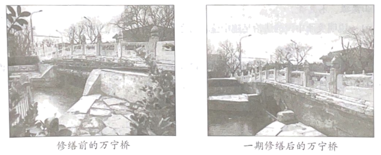

2023年北京中考道德与法治 第18题 解析
18. 北京市深入开展城市更新行动。
材料一 《北京市城市更新条例》自2023年3月1日起施行，以下是该条例的节选。
第二条 本市行政区域内的城市更新活动及其监督管理，适用本条例。 本条例所称城市更新，是指对本市建成区内城市空间形态和城市功能的持续完善和优化调整，具体包括： （一）以保障老旧平房院落、危旧楼房、老旧小区等房屋安全，提升居住品质为主的居住类城市更新： …… 第十三条 ……编制城市更新专项规划，应当向社会公开，充分听取专家、社会公众意见，及时将研究处理情况向公众反馈。 |
（1）《北京市城市更新条例》第十三条的规定，体现的公民参与民主生活的形式是？
材料二 近几年，北京市政府疏解整治促提升专项行动盯上了城市立交桥下面的角落，让“犄角旮旯”变为城市的“金角银边”。桥下空间已有565处“打扫”干净，多处改造提升后，空间美景宜人。
2023年，北京市政府落实城市更新条例，启动危旧楼房改建和简易楼腾退20万平方米，老旧小区综合整治新开工300个、完工100个，老楼加装电梯新开工1000部、完工600部。
材料三 万宁桥是北京中轴线上最古老的桥梁，至今已有700多岁。在城市更新过程中，桥体东侧自来水管道及通讯管路光缆、遮蔽桥体的绿植、不用的隔离墩等全部拆除或移走，桥体风貌完整展现，解决了长期困扰万宁桥保护与展示的难题。

（2）结合材料，运用所学知识，说明北京市政府是如何开展城市更新的。
【答案】（1）民主决策。
（2）北京市政府依法行政，落实城市更新条例。践行为人民服务的宗旨，让城市更加和谐宜居。重视历史文化保护，传承中华文明。
【解析】
【分析】考点考查：依法行政、政府的宗旨、中华文化、参与民主生活。
能力考查：调动和运用知识、描述和阐述事物。
核心素养：政治认同。
【小问1详解】
第一步：审设问，明确主体、作答范围及作答角度。
本题的设问主体为公民，需要运用积极参与民主生活的有关知识，从分析类习题的角度进行作答。
第二步：审材料，提取关键词，链接教材知识。
关键词：编制城市更新专项规划，应当向社会公开，充分听取专家、社会公众意见，及时将研究处理情况向公众反馈→公民通过民主决策参与民主生活。
第三步：整合信息，组织答案。
【小问2详解】
第一步：审设问，明确主体、作答范围及作答角度。
本题的设问主体为国家，需要运用依法行政、政府的宗旨、中华文化的有关知识，从分析类习题的角度进行作答。
第二步：审材料，提取关键词，链接教材知识
关键词①：北京市政府疏解整治促提升专项行动盯上了城市立交桥下面的角落，让“犄角旮旯”变为城市的“金角银边”→北京市政府依法行政，落实城市更新条例。
关键词②：北京市政府落实城市更新条例，启动危旧楼房改建和简易楼腾退20万平方米→践行为人民服务的宗旨，让城市更加和谐宜居。
关键词③：桥体风貌完整展现，解决了长期困扰万宁桥保护与展示的难题→重视历史文化保护，传承中华文明。
第三步：整合信息，组织答案。